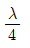
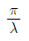
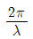
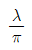
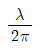
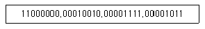
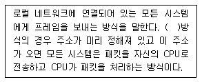
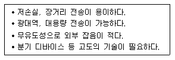
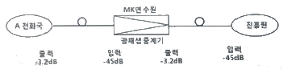

통신설비기능장 (2017-10-14 기출문제)
1과목: 임의 과목 구분(20문항)
1. 다음 중 디지털 교환기의 가입자 정합장치의 기본 기능은 무엇인가?
- 가입자선 상태 감시 (Supervision)
- 프레임 식별(Hsnt During Reframe)
- 프레임 정렬(Alignment of Frame)
- 클럭 복구(Clock Recovery)
(정답률: 92%)

2. 다음 중 ATM 교환기 중계선 정합회로 기능인 것은?
- 과전압 보호( Over Voltage Protecion)
- 경보처리(Alarm Processing)
- 내외선 시험(Testing)
- 호출신호 송(Ringing)
(정답률: 80%)
3. 다음 중 발신국 제어 (End-to-End)방식에 대한 설명으로 틀린 것은?
- 발신국 교환기는 중계국까지만 신호를 전송하면 중계국이 다음 중계국이나 착신국으로 신호를 전송하는 방식이다.
- 이 신호방식은 타 신호방식과 의 접합이 어렵다.
- 발신측 교환기에서 다음 중계교환기를 제어하는데 필요한 신호만 보내주어 착신측 교환기에 연결될 때까지 발신측 교환기의 신호기가 계속 제어를 담당하는 방식이다.
- 중계국의 신호장치는 신호수신 기능만 갖고 신호의 재생중계가 없으므로 신호전송시 전송로 품질에 크게 영향을 받고 발신국 신호 송신기는 광범위한 기능을 수행할 필요가 있다.
(정답률: 79%)
4. 다음 중 양자화 방식에 해당되지 않는 것은?
- 선형 양자화
- 비선형 양자화
- 적응형 양자화
- 쌍곡선 양자화
(정답률: 85%)
5. 다음 중 프레임의 종류를 식별하기 위하여 사용되는 HDLC의 필드는?
- 플래그 필드
- 주소 필드
- 제어 필드
- FCS 필드
(정답률: 58%)
6. 다음 중 위상편이변조방식(PSK)에 대한 설명으로 가장 적합하지 않은 것은?
- 위상의 왜곡현상으로 일정 이상의 속도를 내기는 어렵다.
- QPSK 방식의 경우 진폭이 동일한 4가지의 위상점이 발생한다.
- BPSK 방식은 QPSK 방식 보다 데이터 전송속도가 2배 빠르다.
- PSK 계열의 경우 진수 (Level)를 올리면 회로가 복잡해지며 속도는 증가된다.
(정답률: 79%)
7. 무선통신 채녈의 신호대잡음비(S/N)가 31이고 채널재역폭이 125[kHz] 일 때 최대 전송용량은?
- 432[kbps]
- 500[kbps]
- 625[kbps]
- 750[kbps]
(정답률: 88%)
8. 아날로그 데이터를 디지털 형태로 변환하여 전송하고 디지털 형태를 원래의 아날로그 데이터로 변환하는 장비는?
- MODEM
- CCU
- DSU
- CODEC
(정답률: 81%)
9. 다음 중에서 디지털 변조가 아닌 것은?
- ASK
- FSK
- PSK
- DSB
(정답률: 87%)
10. RFC(Request For Comments) 문서 표준화 단계로 알맞은 것은?
- Internet Draft - Draft Standard - Dtandard
- Internet Draft - Experimental - Dtandard
- Proposed Standard - Draft Standard - Standard
- Proposed Standard - Experimental - Standard
(정답률: 78%)
11. 다음 중 PLL(Phase Locked Loop)의 주요 구성이 아닌 것은?
- AGC
- VCO
- LPF
- 위상비교기
(정답률: 85%)
12. 슈퍼헤테로다인 수신기에서 중간주파수가 455[kHz]이면, 860[kHz]의 방송에 대한 영상주파수는 얼마인가?
- 1,570[kHz]
- 1,770[kHz]
- 1,970[kHz]
- 2,170[kHz]
(정답률: 82%)
13. 다음 중 안테나의 손실저항이 발생하는 원인이 아닌 것은?
- 접지저항
- 도체저항
- 복사저항
- 유전체 저항
(정답률: 74%)
14. GP(Ground Plane) 안테나의 지선 레이디얼(Radial)은 무슨 역할을 하는가?
- 접지(카운트 포이즈)
- 페이딩 방지
- 지향성 증가
- 혼신방지
(정답률: 84%)
15.

수직접지 안테나가 공진하고 있을 때 실효고(he)는?



(정답률: 72%)
16. 다음 중 GPS(Global Positioning System) 위성에 대한 설명으로 옳지 않은 것은?
- 위성으로부터 전파를 수신해서 수진점의 위치, 이동 방향, 속도를 측정할 수 있다.
- 4개의 궤도에 12기 정지위성을 구성되어 있으며 4기의 위성으로부터 신호를 수신하여 이용한다.
- 위치 정보와 지고 정보를 조합해서 자동차용 자동 운항 시스템에 이용한다.
- 위성에 탑재된 세슘 원자 시계를 기준으로 동기를 맞추고 위치 정보를 계산한다.
(정답률: 90%)
17. 다음 중 델린저(Dellingre) 현상의 전반적인 특징으로 옳은 것은?
- 15일 주기로 발생하고 전자 밀도가 증가한다.
- 저위도보다 고위도 지방이 심하다.
- 소실 현상 (Fade Out)이라고 한다.
- 지속 시간은 2~5일간 계속된다.
(정답률: 75%)
18. 다음 중 제4세대 이동통신의 핵심 기술이 아닌 것은?
- OFDM
- MIMO
- 스마트 안테나
- 레이크 수신기
(정답률: 83%)
19. IS-95 CDMA 이동통신시스템에서 역방향 링크 액세스 채널의 용도에 속하지 않은 것은?
- 단말기에서 전화를 걸 때
- 위치 등록을 실시할 때
- 기지국으로부터의 호출에 대해 응답할 때
- 통화 중에 기지국에 특정한 제어신호를 보낼 때
(정답률: 69%)
20. 이동통신에서 이동국이 다른 이동통신 교환기 서비스 영역 또는 다른 사업자 영역으로 이동하여도 통화가 가능하도록 하는 기능은?
- 위치등록
- 로밍
- 핸드오버
- 호출
(정답률: 89%)
2과목: 임의 과목 구분(20문항)
21. 다음 중 다원 접속방식에서 이동통신 가입자 수용 용량이 가장 많은 것은?
- FDMA
- SDMA
- CDMA
- TDMA
(정답률: 85%)
22. IPv4 C클래스에서 네트워크 식별자를 27비트만 사용한다면 서브넷 마스크는?
- 255.255.255.224
- 255.255.255.240
- 255.255.255.248
- 255.255.255.255
(정답률: 81%)
23. IPv4 주소체계에서 [보기]의2진 표현을 10진수로 올바르게 표현한 것은?

- 192.36.30.21
- 192.36.30.22
- 192.18.15.12
- 192.18.15.11
(정답률: 88%)
24. 전화통신망(PSTN) 구성요소 중 통신 채널을 상호 연결시켜 기능을 하는 것은?
- 가입자 선로 접속부
- 교환 회로망
- 교환 제여부
- 신호망 접속부
(정답률: 60%)
25. 상위계층의 데이터에 헤더나 트레일러와 같은 각종 제어 정보를 추가하여 하위계층으로 내려 보내는 과정을 무엇이라고 하는가?
- 흐름제어(Flow Control)
- 오류제어(Error Control)
- 동기화(Synchronous)
- 캡슐화(Encapsulation)
(정답률: 87%)
26. 다음 중 서브넷마스크에 대한 설명으로 맞지 않는 것은?
- IP주소에서 네트워크 주소와 호스트 주소를 구별하는 구별자 역할을 한다.
- 32비트로 이루어져 있다.
- 서브넷 비트열이 ‘0’이면 네트워크 부분으로 인식한다.
- 서브넷 비트열이 ‘0’이면 호스트 주소로 인식된다.
(정답률: 85%)
27. 다음 괄호 안에 들어갈 내용으로 알맞은 것은?

- 멀티캐스트
- 브로드캐스트
- 유니캐스트
- 애니캐스트
(정답률: 84%)
28. 사용하는 컴퓨터의 IP Adderss가 165.132.10.21이라면 그 컴퓨터가 속한 Class 와 해당 Class의 등록 가능한 호스트 수로 바르게 연결된 것은?
- Class B : 216-2
- Class B : 28-2
- Class C : 216-2
- Class C : 28-2
(정답률: 64%)
29. 침입자로부터의 모든 공격을 별도의 시스템으로 유도하여 공격이 성공적으로 보이도록 하면서 침입자를 추적할 수 있도록 하는 침입탐지시스템의 도구는 무엇인가?
- Firewall
- Honeypot
- Tripwire
- Elgamal
(정답률: 88%)
30. 다음 중 정보보호시스템의 종류로 적합하지 않은 것은?
- 방화벽 (Firewall)
- IDS(Intrusion Detection System)
- VPN(Virtual Private Network)
- DoS(Denial of Service)
(정답률: 87%)
31. 다음 중 DES 암호 알고리즘에 대한 설명으로 맞지 않는 것은?
- 64비트 블록암호이다.
- 키의 길이는 56비트이다.
- 암호화 과정과 복호화 과정이 상이하다.
- 16라운드를 반복한다.
(정답률: 77%)
32. 다음 중 안티-주트킷(Anti-RooKit)의주요 기능이 아닌 것은?
- 숨긴 파일 찾기
- 수정된 레지스트리 찾기
- 보호 해제된 프로세스 탐지
- 로그파일 수정
(정답률: 85%)
33. 전화국 간에 설치되는 시내 통신용 케이블로 관로용과 직매용으로 사용되며 전기적 특성 향상을 위해 고밀도 폴리에틸렌으로 2중 절연되어 있어 케이블 심선에 물, 습기가 침투하는 것을 방지하기 위해 젤리로 충진된 케이블은 무엇인가?
- CCP케이블
- PVC케이블
- FS케이블
- PIC케이블
(정답률: 80%)
34. 다음 서술한 내용으로 가장 알맞은 전송 선로는 무엇인가?

- UTP케이블
- FS케이블
- 광케이블
- 동축케이블
(정답률: 92%)
35. 케이블 포설시 허용 장력이 250[kg], 케이블 무게 4[kg], 지하관로의 마찰계수가 0.5일 때 맨홀의 설치 간격은?
- 31.25[m]
- 125[m]
- 500[m]
- 2,000[m]
(정답률: 78%)
36. 굴절률이 1.5인 유리로 빛이 공기 중에서 수직으로 입사할 때 공기와 유리의 경계에서 반사되는 전력은 몇[%]인가?
- 1[%]
- 2[%]
- 4[%]
- 10[%]
(정답률: 68%)
37. 장거리 광통시스템에서 사용되는 발광소자와 수광소자로 가장 알맞게 연결된 것은?
- 발광소자 : LD, 수광소자 : APD
- 발광소지 : LED, 수광소자 : PIN-PD
- 발광소자 : APD, 수광소자 : LD
- 발광소자 : PD, 수광소자 : LED
(정답률: 82%)
38. 어떤 광섬유에서 코어의 굴절률(n1)이 1.535이고, 클래드의 굴절률(n2)이 1.490일 때 최대 수광각은 얼마인가?
- 15.4°
- 19.1°
- 21.7°
- 25.3°
(정답률: 62%)
39. 광섬유 모드의 종류에 따라 계단형 광섬유와 언덕형 광섬유로 구분한다. 이는 무엇의 기준으로 구분하는가?
- 입사광과 반사광의 세기 차
- 코어와 클래드의 직경 차
- 단일모드와 다중모드 형태
- 코어와 클래드의 굴절률 차(분포 형태)
(정답률: 81%)
40. 광단국장치의 광출력 -3.2[dBm], 광재생중계기의 수신 감도 -45[dBm], 광재생중계기의 접속손실 3.5[dB], 시스템 마진 5.5[dB], 광섬유케이블의 광파장 손실이 1.2[dB]일 때 광재생중계기의 설치 간격은 약 얼마인가?

- 27.3[㎞]
- 35.2[㎞]
- 40.7[㎞]
- 81.4[㎞]
(정답률: 59%)
3과목: 임의 과목 구분(20문항)
41. 수신 신호 레벨이 -15[dBm]인 회선 종단에서 S/N비를 측정했을 때 40[dB]였다. 이 회선의 잡음 레벨은?
- -30[dBm]
- -55[dBm]
- 30[dBm]
- 55[dBm]
(정답률: 86%)
42. 케이블 매설위치를 탐색하고자 측정기를 매설위치 바로 위의 대지에 놓았을 때 발진음의 상태는?
- 수직으로 놓았을 때 최대음, 수평으로 놓았을 때 최소가 된다.
- 수직으로 놓았을 때 최소음, 수평으로 놓았을 때 최대가 된다.
- 수직, 추평 모두 최대음이 된다.
- 수직, 수평 모두 발진음이 나타나지 않는다.
(정답률: 90%)
43. 수신기의 감도 측정시 필요하지 않는 것은?
- 표준 신호 발생기
- 의사안테나
- 진공관 전압계(VTVM)
- 안테나 전류계
(정답률: 70%)
44. 다음 중 수신기의 특성 측정에 의사안테나(Dummy Antenna)를 사용하는 가장 큰 이유는?
- 수신기의 압력 전압이 너무 커지기 때문에 사용한다.
- 표준 사용상태의 특성을 알기 위하여 사용한다.
- 수신기의 입력전압이 너무 작아지기 떄문에 사용한다.
- 잡음이 들어오는 것을 방지하기 위하여 사용한다.
(정답률: 69%)
45. 광섬유 케이블의 포설이 끝난 후 접속 부분의 손실 정도를 비파괴적으로 알 수 있는 방법은 무엇인가?
- INF 방법
- 파필드 방법
- RNF 방법
- OTDR 방법
(정답률: 94%)
46. 다음 중 OTDR로 측정할 수 없는 것은?
- 광섬유의 거리
- 광섬유의 접속손실
- 광섬유의 절단점(파단점)
- 광섬유의 분산
(정답률: 79%)
47. 직류 출력 전압이 무부하일 때 250[V], 전부하일 때 225[V]이면 이 정류기의 전압변동률은 약 몇 [%]인가?
- 10.0
- 11.1
- 15.1
- 22.2
(정답률: 74%)
48. 정류 회로의 직류 전압이 400[V]이고 리플 전압이 4[V]였다. 이 회로의 이플률은 몇 [%]인가?
- 1
- 2
- 3
- 5
(정답률: 85%)
49. 방송통신 재난에 대비하기 위하여 수립하여 방송통신재난관리기본계획에 포함되어야 할 내용이 아닌 것은?
- 비상용 무선통신 중계망 구성 및 운용
- 우회 방송통신 경로의 확보
- 방송통신설비의 연계 운용을 위한 정보체계의 구성
- 피해복구 물자의 확보
(정답률: 60%)
50. 다음 중 「정보통신공사업법 시행령」에서 정하는 “통신설비 공사”에 해당하지 않는 것은?
- 통신선로 설비공사
- 방송전송∙선로 설비 공사
- 고정무선통신 설비 공사
- 이동통신 설비 공사
(정답률: 74%)
51. 다음 중 통신관련 시설의 접지저항을 100[Ω] 이하로 할 수 있는 경우가 아닌 것은?
- 선로설비 중 선로∙케이블에 대하여 일전 간격으로 시설하는 접지
- 국선 수용 회선이 200회선 이상인 주배선반
- 보호기를 설치하지 않는 구내통신단자함
- 철탑이외 전주 등에 시설하는 이동통신용 중계기
(정답률: 82%)
52. 다음 중 「지능형 홈네트워크 설비 및 기술기준」 에서 정하는 원격제어기가 아닌 것은?
- 가스벨브제어기
- 조명제어기
- 창문개폐제어기
- 난방제어기
(정답률: 87%)
53. 다음 중 「방송통신설비의 안전성 및 신뢰성에 대한 기술기준」의 통신국사 및 통신기계실의 조건 관련 항목이 아닌 것은?
- 우량 및 적설량 관리
- 출입제한 기능
- 화재의 경보∙소화
- 온∙습도 관리
(정답률: 77%)
54. 감리란 누구의 위탁을 받은 용역업자가 설계도서 및 관련규정의 내용대로 시공되는 감독하는 것은?
- 공사업자
- 점검업자
- 조사업자
- 발주자
(정답률: 84%)
55. 합격할 로트의 품질(AQL)을 정하고 이 수준보다 높은 품질의 로트에 대해 함격시킬 것을 공급자측에 보증하는 샘플링 기법은?
- 계수값 샘플링 검사
- 조정형 샘플링 검사
- 규준형 샘플링 검사
- 선별형 샘플링 검사
(정답률: 69%)
56. 공수계획의 기본적인 방침이 아닌 것은?
- 부하와 능력의 균형화
- 가동률의 향상
- 일정별 부하의 변동방지
- 가공방법의 합리화
(정답률: 69%)
57. 동일한 종류의 제품을 대량 생상하는 산업에서 흔히 볼 수 있는 제조형태로 20세기초 포드자동차가 기존의 간속생상시스템을 탈피하고 대량 생상할 수 있도록 컨베이어 시스템을 도입한 것에서 시작된 것은?
- 고정생산시스템
- 단속생산시스템
- 유연생산시스템
- 연속생산시스템
(정답률: 88%)
58. 표준시간에 대한 기준으로 옳지 않은 것은?
- 피로와 지연을 수반하지 않은 최상의 페이스를 기준으로 한다.
- 적정한 숙련도를 지닌 작업자를 기준으로 한다.
- 주어진 작업조건하에서의 구정된 작업방법을 기준으로 한다.
- 규정된 품질을 만족시기는 1단위 작업의 수행시간을 기준으로 한다.
(정답률: 82%)
59. 다음 중 작업관리에서 공정분석 기호 표시의 연결이 잘못된 것은?
- 작업 : ○
- 저장 : ◇
- 검사 : □
- 운반 : →
(정답률: 79%)
60. 다음 중 생산관리에서 설비보전의 종류가 아닌 것은?
- 보전예방
- 예방보전
- 사후보전
- 개량경영
(정답률: 73%)